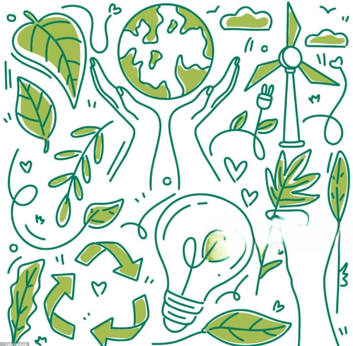
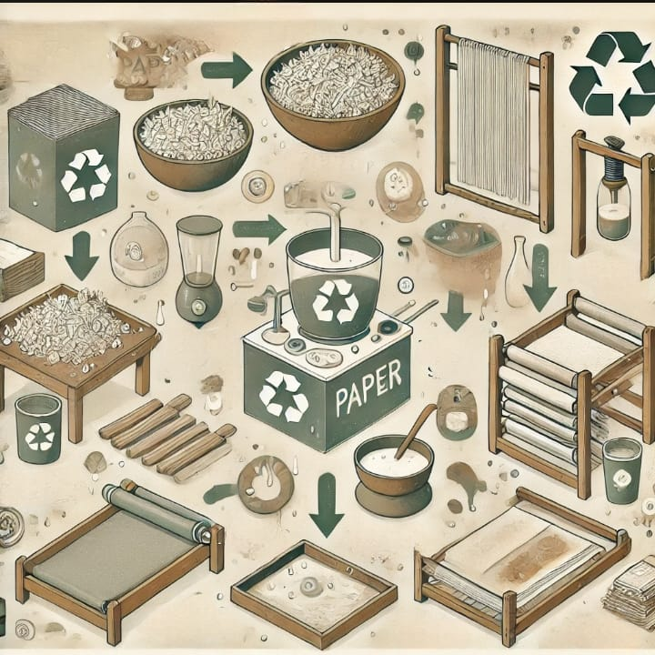
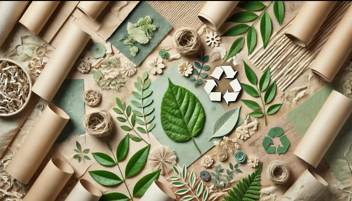
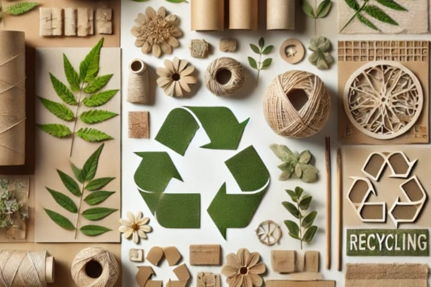

Introducción
Este proyecto analiza la cantidad de papel que se desecha en el edificio de ISC del Tecnológico de Estudios Superiores de Huixquilucan...

Conclusión de Francisco:Reciclar papel es esencial para reducir la contaminación, preservar los recursos naturales y disminuir la tala de árboles. Durante este semestre, en los proyectos de Desarrollo Sustentable se utilizaron 40 hojas, una cifra que, aunque parece pequeña, se suma a la cantidad de papel desechado diariamente. Es necesario reflexionar sobre nuestros hábitos de consumo; si no adoptamos prácticas responsables como el reciclaje, seguimos contribuyendo al problema en lugar de buscar soluciones.

Conclusión de Oscar:
Reciclar papel es importante porque ayuda a reducir la basura y a cuidar recursos como el agua y la energía. Este semestre, se usaron 40 hojas en los proyectos de Desarrollo Sustentable, lo que muestra que podemos aprovechar mejor el papel. Sin embargo, el reto es que todos cambiemos nuestra forma de pensar y hagamos acciones para cuidar el medio ambiente, no solo hablar de ello.

Conclusión de Itzel:El reciclaje de papel es clave para cuidar el medio ambiente, ya que reduce la cantidad de basura y evita la tala excesiva de árboles. En este semestre, se utilizaron 40 hojas en proyectos, lo que representa una pequeña fracción del papel que se desecha en la institución. Si bien un programa de reciclaje puede ser efectivo, su éxito dependerá de la disposición de todos para participar y comprometerse genuinamente con un cambio en sus hábitos.

Conclusión de Angel:La reutilización del papel es vital para disminuir la generación de residuos y fomentar una economía más sostenible. Este semestre se gastaron 40 hojas solo en proyectos, un ejemplo del impacto del consumo académico. Sin embargo, para que el reciclaje sea una realidad, debemos cuestionar nuestras prácticas actuales y asumir responsabilidad individual y colectiva en la reducción del desperdicio. Reflexionar no es suficiente; necesitamos actuar.